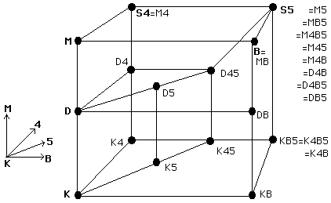

Background and Goals

Reasoning in Modal Logic
- Some native modal logic ATP systems
- No complete support for modal cube or further variations
- Translation to higher-order logic is an alternative
- Improving ATP for higher-order logic
Goals
- Test translation of modal logic to higher-order logic
- Evaluate higher-order ATP systems on translated problems
- Compare native modal logic ATP with translation approach
What we Did
- Translate QMLTP to the new TPTP language
- Compare native modal logic ATP with higher-order ATP on translated QMLTP